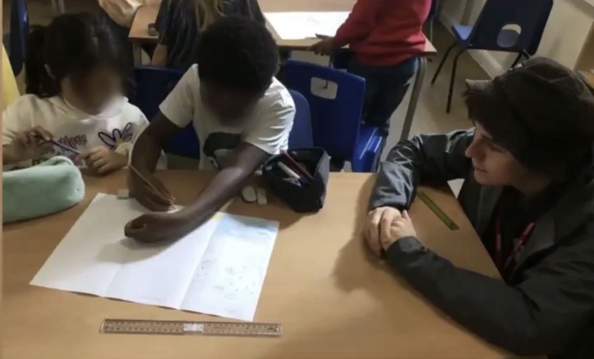

Research Consultancy
Bespoke qualitative and mixed-methods research in disaster risk reduction, urban ecology, and nature-based solutions.
- Literature Reviews
- Fieldwork Design
- Policy Briefs

Teaching
From UCL postgraduate modules to primary school climate workshops.
Undergraduate, postgraduate and school audiences (KS2 is ages 7 to 11, KS5 is sixth form).
UCL, Postgraduate Teaching Associate, undergraduate
UCL, Postgraduate Teaching Associate, postgraduate
UCL, Postgraduate Teaching Associate, postgraduate
STEM Learning Scheme, Climate Ambassador, KS2
Brightside Mentoring, Mentor, KS5
UCL, Guest Lecturer, postgraduate
I embed teaching within applied research rather than treating it as a separate role. My goal is to equip students with critical thinking and practical tools for navigating disaster risk.
Available to mentor students in disaster research, science, and career navigation. Please get in touch to discuss opportunities.

Research, mentoring, and educational services for individuals and organisations working at the intersection of environment, risk, and resilience.
Bespoke qualitative and mixed-methods research in disaster risk reduction, urban ecology, and nature-based solutions.
One-to-one support for postgraduate researchers navigating fieldwork, writing, publication, and doctoral study.
Programmes for schools, community groups, and public audiences on nature, emergency preparedness, and environmental justice.
Participatory and creative methods for projects reaching communities or challenging conventional research frameworks.
Academic writing support, manuscript review, and editing for journal articles, grant applications, and policy documents.
Conference presentations, panel discussions, and public lectures on urban resilience and nature-based approaches to risk.